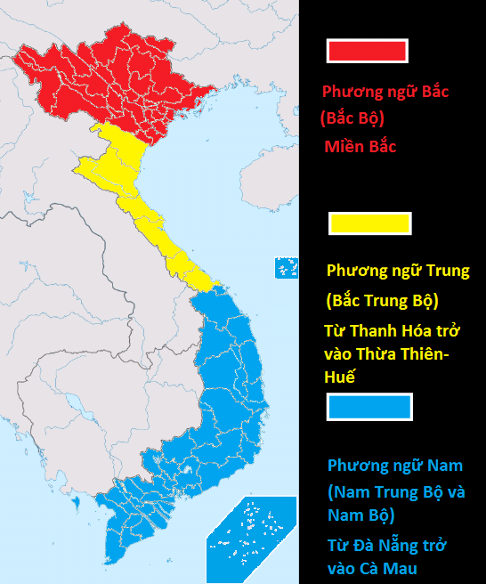

Bản Đồ Văn Hóa & Phương Ngữ
Click vào các vùng miền để khám phá các dân tộc đặc trưng.

B
T
N
*Click vào các điểm tròn hoặc vùng trên bản đồ
Click vào các vùng miền để khám phá các dân tộc đặc trưng.

*Click vào các điểm tròn hoặc vùng trên bản đồ